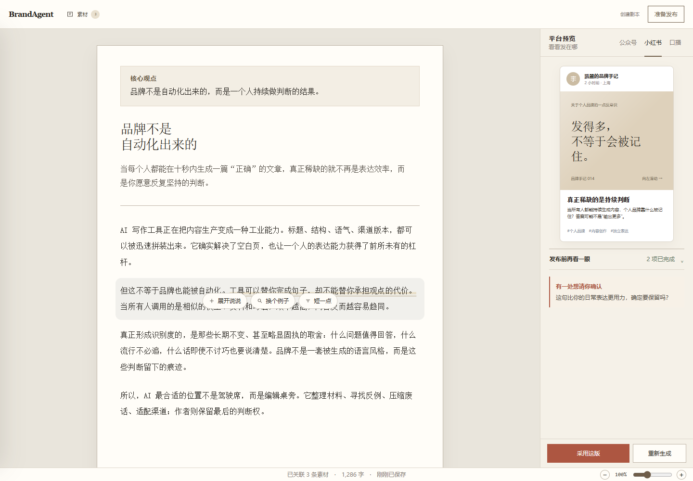

Bring your material
Import text from your notes, transcripts or articles. Link the relevant material to the piece you are writing.
A writing desk for your expertise
Turn your notes, transcripts and reference material into WeChat articles, Xiaohongshu posts and video scripts. Keep your point of view — and the source behind each claim — in sight.
Built for Chinese-speaking creators · Early-stage, open-source project
「每周做一次客户访谈，
比每天追一个热点更有用。」
THE IDEA WORTH KEEPING
持续创作，不必从追热点开始。先把你在客户访谈里听到的问题，变成值得分享的观点。
ONE POINT OF VIEW. MORE WAYS TO SHARE IT.
01 / THE WORKFLOW
Import text from your notes, transcripts or articles. Link the relevant material to the piece you are writing.
Write the point you want to make. Draft, select a sentence, and ask for an expansion, a different example or a shorter version.
Preview platform-specific versions, check source references and accept the changes you want. You publish in each platform yourself.
02 / FROM MATERIAL TO FORMAT
Explore a prewritten Chinese example. These samples illustrate the workflow; no model is called on this page.
ARTICLE / 公众号
做内容时，我们很容易把选题交给热搜。
但这次访谈里，客户提到：真正带来咨询的，常常是那些把具体问题讲清楚的文章。
下一次选题前，不妨先打开你的访谈笔记。把客户反复问的那个问题，写成一篇有依据、有自己判断的内容。
素材出处：客户访谈笔记 · 示例段落 01
SOCIAL NOTE / 小红书
访谈里听到一个很真实的反馈：
一直追热点，未必带来咨询。
把客户的具体问题说清楚，反而值得持续做。
试试这三个步骤：
01 找一个客户问过的问题
02 写下你自己的判断
03 用已有素材解释清楚
#专业内容 #内容创作 #客户访谈
素材出处：客户访谈笔记 · 示例段落 01
SPOKEN SCRIPT / 口播稿
“做内容，到底该不该追热点？”
一次客户访谈里，对方说：
他们每周都在追热点，
但带来咨询的，往往是回答具体问题的文章。
所以，下次不知道写什么，
先看看客户问过你什么。
用你的经验，把那个问题讲清楚。
素材出处：客户访谈笔记 · 示例段落 01
03 / INSIDE THE PRODUCT
An existing local product screenshot. The full application is separate from this public introduction page.

THE EDITORIAL PROMISE
See where a claim comes from. A source reference is a starting point for your review, not a guarantee that a claim is true.
Review AI suggestions before accepting them. Platform rewrites stay connected to a snapshot of the original manuscript.
Check your words and choose what to use. Publishing remains a manual action in your own platform accounts.
04 / EARLY ACCESS & PRICING
OPEN-SOURCE / SELF-HOSTED
Free source code
Run the application yourself following the repository setup guide. Your hosting and model API usage are separate costs.
Read the setup guide ↗PRO / PROPOSED EARLY-ACCESS PRICE
¥29 / month
Reference pricing from the current prototype. Hosted access, included usage and availability are confirmed individually. No checkout or automatic subscription on this page.
Ask about early access ↗LET’S START WITH YOUR WORKFLOW
Tell us what you create, which platforms you use and where the work gets repetitive. Early-access conversations currently happen on GitHub.
Request early access on GitHub ↗Opens a public GitHub issue form. Requires a GitHub account. Please don’t share private client material or contact details.